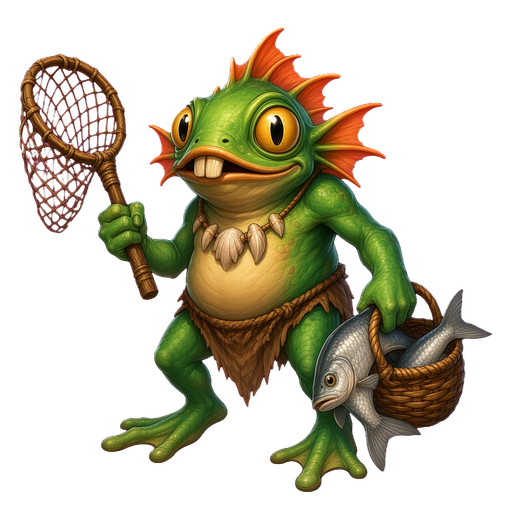

TWITCH VISUALS / OBS
Подключите канал, настройте толпу — и добавьте одну ссылку в OBS.
Если выключено, оверлей работает локально без зрителей Twitch. Порог времени считается от запуска.
Токен хранится локально: Keychain на macOS / DPAPI в Windows, если шифрование ОС доступно. Иначе — файл с ограниченным доступом (в интерфейсе будет предупреждение). Истёкший токен замените вручную; автопродления OAuth нет.
Появляется при входе в чат или новом сообщении, не от числа зрителей эфира. Уже сидевших в чате Twitch не присылает. Тип и раскраска закреплены хэшем Twitch user ID между запусками без базы ников.
Для IRC нужен user access token этого Client ID со scope chat:read. App access token получает число зрителей, но не читает чат. Приложение ничего не пишет в чат. Тексты временно передаются локальному OBS, не сохраняются на диск и не попадают в логи. Статус IRC — в отладке. Демо: N — пять участников, Q — сообщение, C — убрать участников.
Источники → Браузер. Размер: 1920 × 1080, 60 FPS. «Локальный файл» выключен.
HTTP-сервер запускается…
Тест отправляется в открытый OBS-источник и соблюдает очередь/cooldown. Демо показывает вымышленных зрителей.
Закрытие окна оставит приложение в трее/строке меню. Для остановки выберите «Выйти».
Сохраните настройки для применения. Флаг --debug включает отладку на текущий запуск. В журнал и отчёт не попадают токены, Client secret или заголовки авторизации.
Ожидание статуса…
Установка — по кнопке после эфира, без принудительного перезапуска. Portable и неподписанный macOS проверяют версию и открывают страницу скачивания, но не заменяют себя автоматически. Источник: Jommmain/Twitch-overlay, публичные GitHub Releases. Для приватного репозитория нужен отдельный безопасный feed; токен в приложение не встроен.
Обновления ещё не проверялись.